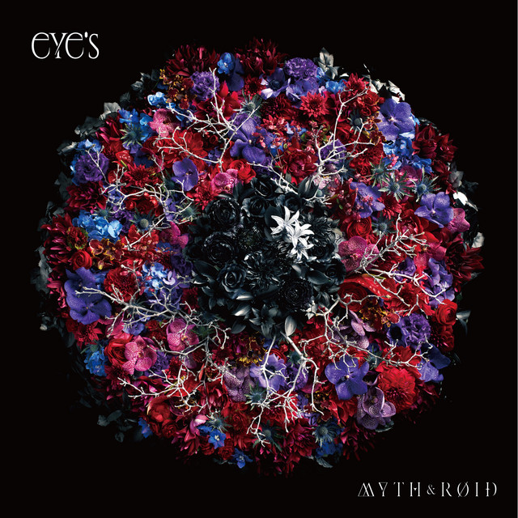
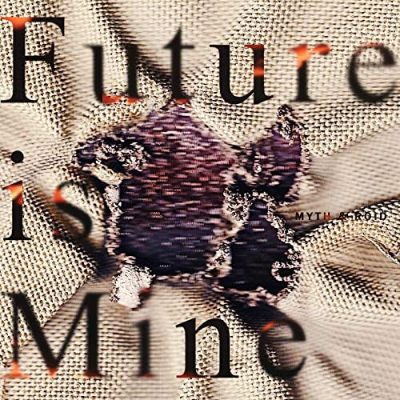
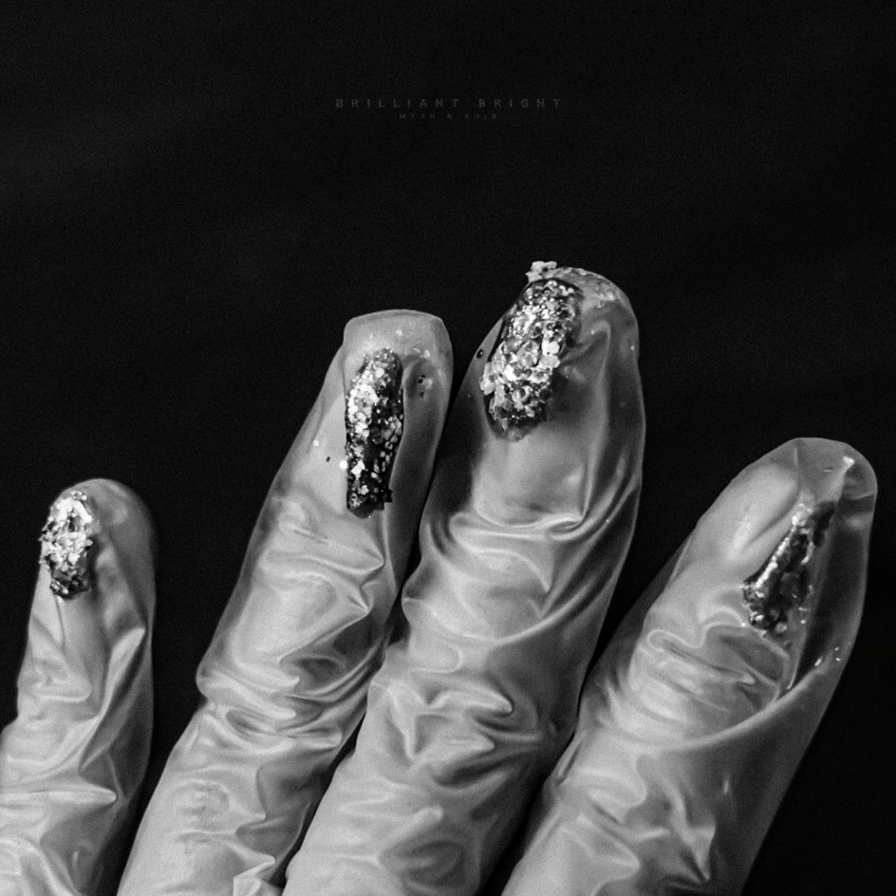
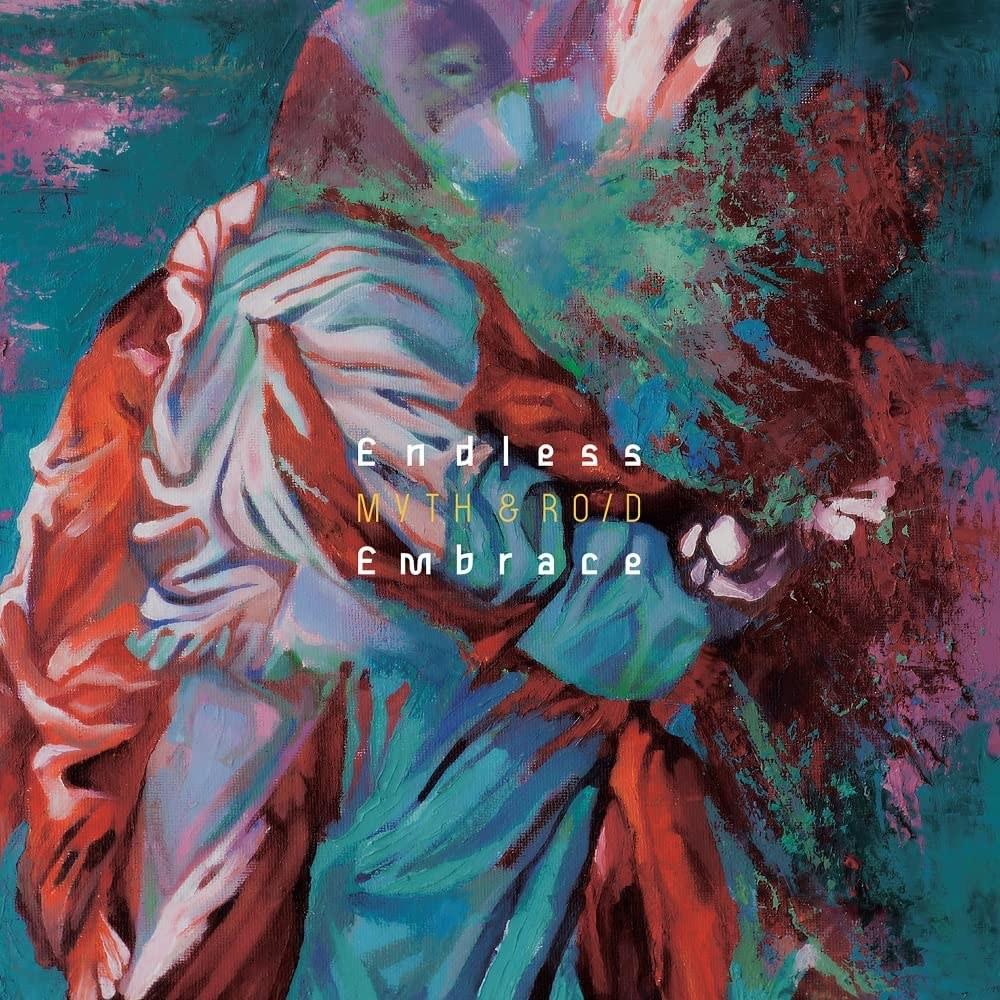

Le groupe Myth and Roid a sorti de nombreuses œuvres depuis sa création et certaines ont même été dans le haut du classement du Oricon tel que eYe's qui a atteint la 6ème place.
eYe's |
|
- A beginning - |
theater D |
 |
TRAGEDY:ETERNITY |
JINGO JUNGLE -HBB Remix- |
|
Paradisus-Paradoxum |
Crazy Scary Holy Fantasy |
|
STYX HELIX |
L.L.L. |
|
Yuki wo Kiku Yoru |
sunny garden sunday |
|
Tough & Alone |
-- to the future days |
|
ANGER/ANGER |
-An ending |
Écouter Crazy Scary Holy Fantasy:
Museum–The Best of Myth & Roid– |
Cela fait 2 ans 8 mois et 2 jours que cette compilation est sortie. |
L.L.L. |
JINGO JUNGLE |
 |
ANGER/ANGER |
Remembrance |
|
STYX HELIX |
HYDRA |
|
STRAIGHT BET |
VORACITY |
|
Paradisus-Paradoxum |
shadowgraph |
|
theater D |
PANTA RHEI |
|
Crazy Scary Holy Fantasy |
TIT FOR TAT |
|
Forever Lost |
Cracked Black |
Écouter TIT FOR TAT:
Future is Mine |
Cela fait 2 ans 1 mois et 0 jours que ce single est sorti. |
Future is mine |
Future is mine -instrumental |
 |
Reminiscience Reincarnation |
Reminiscience Reincarnation -instrumental |
Écouter Reminiscience Reincarnation:
BRILLIANT BRIGHT |
Cela fait 1 ans 7 mois et 22 jours que ce single est sorti. |
BRILLIANT BRIGHT |
BRILLIANT BRIGHT (instrumental) |
 |
Écouter Brilliant Bright:
ENDLESS EMBRACE |
Cela fait 0 ans 3 mois et 5 jours que ce single est sorti. |
Endless Embrace |
Endless Embrace (instrumental) |
 |
Clattanoia (penumbral) |
Clattanoia (penumbral)(instrumental) |
Écouter Endless Embrace: